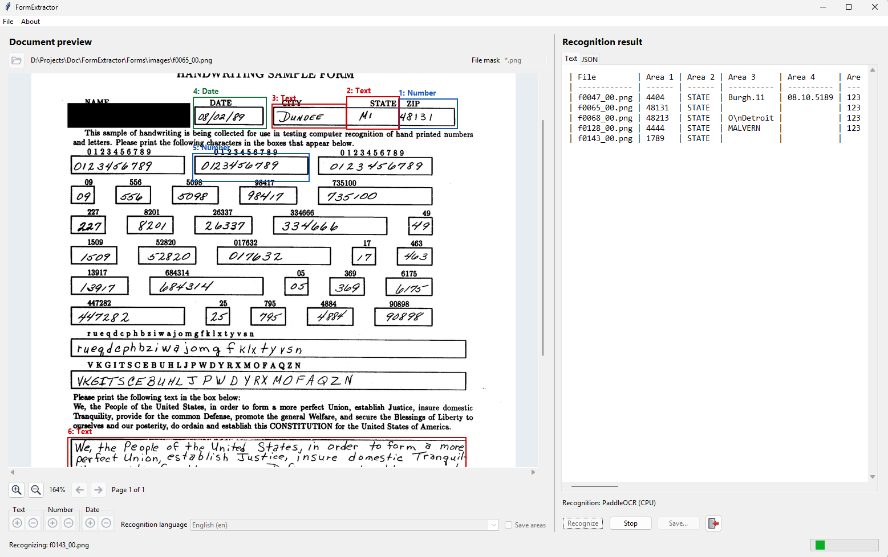

FormExtractor
App manual
Select fields. Recognize a folder. Review and save.
Open printable PDF1. Getting started
FormExtractor reads selected fields from scanned forms and places the results in a table. Define areas on one source document, then recognize the matching files in the same folder. Each file becomes a row; each area becomes a column.

Example recognition session using the supplied screenshot. Results shown are examples, not verified transcriptions. The screenshot shows the older About menu; the current menu is Help > App manual / About. Click the image in the HTML manual to view it at full size.
Your first batch
1. Import a representative form with the folder button or File > Import (Ctrl+O).
2. Choose the recognition language and a file mask, such as *.png.
3. Click + beside Text, Number or Date and drag a rectangle around each value.
4. Select Save areas if you want images of the matched fields for checking.
5. Click Recognize. Review the values and any errors as the table fills.
6. Correct the selected output tab if necessary, then choose Save (Ctrl+S).
2. Preview and recognition areas
Find your way around
The left pane shows the source document. Its full path appears beside Import. The right pane contains Text and JSON results. Drag the raised divider between the panes to change their widths. The bottom status line shows progress and the current file.
Use the magnifying-glass buttons or mouse wheel to zoom from 25% to 400% of the fitted size. Scroll or drag to inspect a large page. Previous and Next browse PDF pages and multi-frame images. Area coordinates remain correct when you zoom.
Add a field
Choose the + button in the appropriate type group. The pointer becomes a crosshair. Drag around the value, including the full height of its characters. Keep unrelated labels, neighbouring fields and extra rows outside the rectangle. Select one value per Number or Date area.
Text areas are red, Number areas are blue, and Date areas are green. Every rectangle has a number and type label. Numbers determine result-column order, not the rectangle's position on the page.
Remove or redraw a field
Choose the minus button for the area's type, then click the rectangle to remove it. Removal affects that type on the current page only. To correct a rectangle, remove it and draw a new one. Remaining area numbers are not renumbered. Press Escape or click the active tool again to return to panning.
Choose a useful template
Use a clear, complete example of the form layout. Matching uses the surrounding form structure to locate the fields in other files, allowing movement, rotation, scale changes and photographed-page perspective. The other files should use the same form layout and corresponding page numbers.
A small field can still match when the rest of the page has enough distinctive structure. A blank page, heavily cropped form or a different layout may not align reliably. A failed match is reported for that area; other files can continue.
Remembered areas
Areas are saved automatically for each source file's full path. Importing that file again restores its areas. On startup, the last available document and page reopen with their saved selections. Renaming or moving a source changes its path, so its old selections may not be restored automatically.
3. Text, numbers and dates
Text: words and identifiers
Use Text for names, vehicle plates, addresses and identifiers. Text preserves letters and meaningful leading zeros. For a postal code such as 00123, choose Text rather than Number. Formatting tags and leading heading markers are removed from recognized values.
Number: a numeric value
Number accepts digits, decimal dots or commas, signs and spaces. The result is normalized: -001,50 becomes -1.5; +12.00 becomes 12; 319 320 becomes 319320. Units and surrounding text are removed when one clear number is present. Multiple or ambiguous expressions such as 12/34 are reported as errors.
Date: a single calendar date
Dates are always displayed as DD.MM.YYYY. Extra punctuation and printed year suffixes such as р. are removed. Invalid dates are reported rather than silently changed to a different calendar date.
Accepted examples: 21.03.2026, 21/03/2026, 21-03-2026, 21 03 2026 and 2026-03-21 all become 21.03.2026. Unambiguous month-first dates such as 03/21/2026 are also accepted.
Compact DDMMYYYY, YYYYMMDD and DDMMYY forms are supported when their interpretation is clear. Recognized English, Ukrainian and Russian month names and common abbreviations are accepted, for example 21 March 2026 or 21 березня 2026.
Ambiguous dates use day-first order: 06/04/2026 means 6 April. Two-digit years 00-49 mean 2000-2049; 50-99 mean 1950-1999. Use a four-digit year when a different century is intended.
Check the recognition
Select the language used by the document in the Recognition language box below the preview. Handwriting, blur, shadows, faint characters and table lines can affect accuracy. Check important dates and numbers against the original even when no error is reported.
If a date fails, include the complete date in the rectangle and exclude neighbouring text or table rows. The app retries empty or invalid date readings to handle suffixes that can be mistaken for digits. It cannot reconstruct characters missing from the image.
4. Batch recognition and saving
Choose the files
File mask selects files in the imported document's folder. Use * for all supported files, *.pdf for PDFs, or *.png;*.jpg for multiple patterns. A question mark matches one character: ????.jpg matches four-character names. Matching is case-insensitive, alphabetical and does not search subfolders.
Supported inputs are PDF, JPG/JPEG, PNG, TIFF, BMP and WebP. Multi-page PDFs and multi-frame images can have areas on different pages. A missing corresponding page is reported for that file. Unlock password-protected PDFs before importing them.
Run, monitor and stop
Recognize becomes available when a document has at least one area. The first run may download OCR models; allow time for it to finish. Results appear after each area. Controls that would change an active job are temporarily disabled. Stop ends the worker and keeps results already displayed; you can save them or start recognition again.
Save areas for checking
Enable Save areas before recognition to save a PNG of the matched crops beside each input, such as invoice_areas.png. Crops are stacked by area number. An unmatched crop is omitted; a matched crop can still be saved if OCR fails. These generated images are excluded from future batches. A later run replaces the corresponding areas image.
Review the table
The Text tab shows an aligned table. JSON contains the source, selected areas and file rows with their values and optional errors. Columns follow ascending area numbers. A missing or failed value can be null in JSON. Successful values, including normalized numbers and dates, are stored as strings.
Both editors are editable, but their edits are independent. Changing Text does not update JSON, and changing JSON does not update Text. Review the exact tab you intend to save. Partial results can contain unfinished or failed fields.
Save the result
Choose Save or Ctrl+S. The active tab supplies the default format. The file-type choice determines whether the Text editor is saved as .txt or the JSON editor as .json. JSON must be valid before it can be saved. Save to a new result file; the input document is protected from being overwritten.
5. Menus, settings and troubleshooting
Menus and keyboard shortcuts
File > Import (Ctrl+O) opens a source. File > Recognize starts the batch. File > Save (Ctrl+S) saves results. File > Settings changes the interface language. File > Exit closes the app and stops active recognition.
Help > App manual (F1) opens this offline English manual in your browser. Use the PDF link to open or save the printable guide. Help > About shows the application version and author contact details. Escape exits an active area tool or closes a settings/about dialog.
Language and preferences
File > Settings > Main offers English, German, French, Spanish, Portuguese, Italian, Ukrainian and Russian interface languages. A changed interface language restarts the desktop session after confirmation of unsaved edits. Cancel discards changes. The interface language is separate from Recognition language.
The app remembers window size and position, pane widths, zoom, OCR language, file mask, Save areas, and the last source/page. Area selections are saved per source path. Recognition results are not a substitute for a saved output file; save any work you need before closing.
Common problems
Recognize is disabled: import a document and add at least one area. No matching files: check the mask and source folder. Model download is slow or fails: check the connection, wait for the first download, then retry. A newly selected OCR language may need additional models.
No reliable match or wrong crop: enable Save areas, compare the crops with the source, and confirm that the files share the template layout and page order. Try a clearer, more complete template. If the crop is correct but its value is wrong, review the area type, language and image quality.
Date/number error: select a single complete value and exclude adjacent fields. Do not remove leading zeros with Number when they identify an item; use Text instead. Save error: check the destination permissions, extension and JSON syntax. Manual will not open: use the file path shown in the error message or reinstall a complete app build.
Local processing and support
Recognition runs locally. OCR model files are downloaded on first use; once the required models are cached, recognition can work offline. Scans are not submitted to a remote recognition service. This manual and its screenshot also work offline.
For support, use the contact details in Help > About. Include the app version, a description of the issue and the error text. Share source documents or saved crops only when you intend to share their contents.